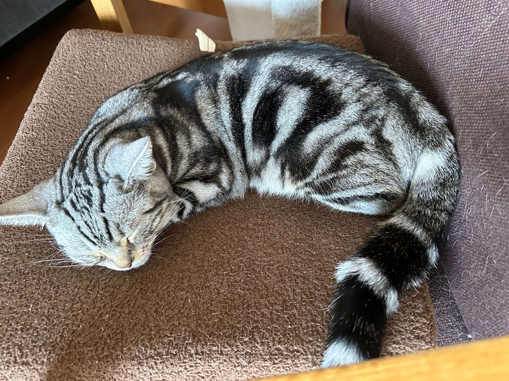
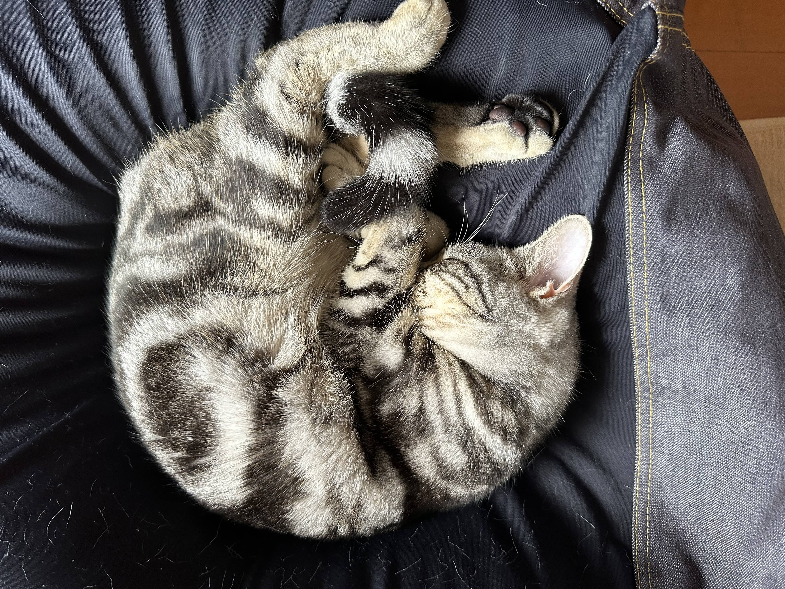
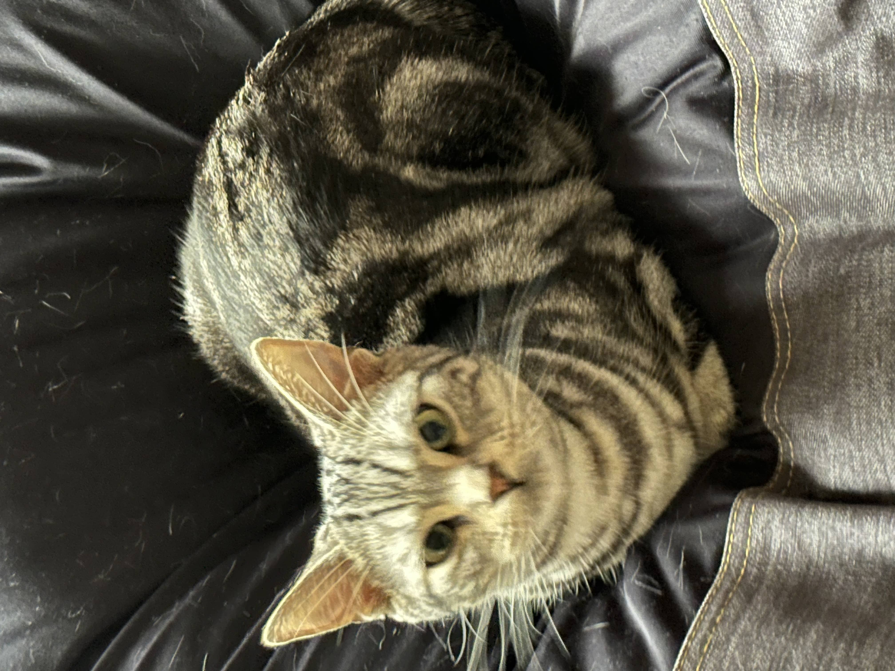

説明
ももちゃんの写真がたくさん流れるスライドショー
写真のアップロード
❮
❯


ももちゃんの笑顔1
ももちゃんの笑顔2
ももちゃんの笑顔3
ももちゃんの笑顔4
ももちゃんの笑顔5
ももちゃんの笑顔6

ももちゃんの笑顔7
ももちゃんの笑顔8
ももちゃんの笑顔9
ももちゃんの笑顔10
ももちゃんの笑顔11
ももちゃんの笑顔12
ももちゃんの笑顔13

ももちゃんの笑顔14
ももちゃんの笑顔15
ももちゃんの笑顔16
ももちゃんの笑顔17
ももちゃんの笑顔18
ももちゃんの笑顔19
ももちゃんの笑顔20
ももちゃんの笑顔21
ももちゃんの笑顔22
ももちゃんの笑顔23
ももちゃんの笑顔24
ももちゃんの笑顔25
ももちゃんの笑顔26

ももちゃんの笑顔27